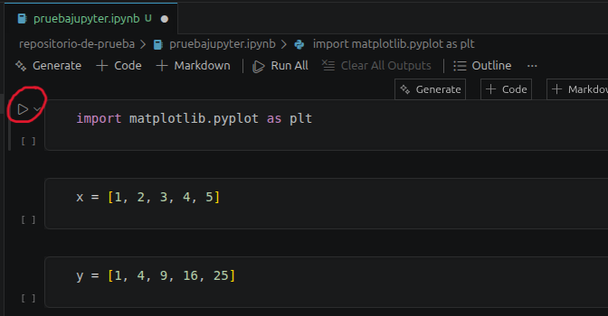
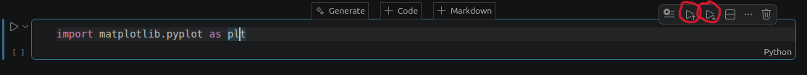

Una vez instalado Jupyter Notebook, es importante conocer los conceptos básicos para trabajar con él. Este tutorial te enseña cómo crear, editar y ejecutar celdas en Visual Studio Code.
Tipos de celdas: Code y Markdown
En Jupyter existen dos tipos principales de celdas:
Ctrl+Enter, y los resultados se muestran debajo de la celda.Para cambiar el tipo de una celda, haz clic en el desplegable de tipo de celda en la barra superior de VSCode.

Interfaz de celdas en VSCode
Ctrl+Enter para ejecutarPanel de variables en VSCode

Ejecutar varias celdas
Enviar selección a terminal
Shift+Enter para ejecutar solo la selecciónReinstiar kernel
Ctrl+Shift+F5Ejemplo: Crear un gráfico simple
# En caso de no tener instalada alguna librería se hace este paso, si no, se omite
%pip install pandas numpy matplotlib
#------------------------------------------------------------------
import pandas as pd
import matplotlib.pyplot as plt
# Datos de ventas por mes
meses = ['Enero', 'Febrero', 'Marzo', 'Abril', 'Mayo']
ventas = [100, 150, 120, 180, 200]
# Crear DataFrame
df = pd.DataFrame({'Mes': meses, 'Ventas': ventas})
print(df)
# Crear gráfico
plt.plot(df['Mes'], df['Ventas'], marker='o')
Tips importantes:
Ctrl+S